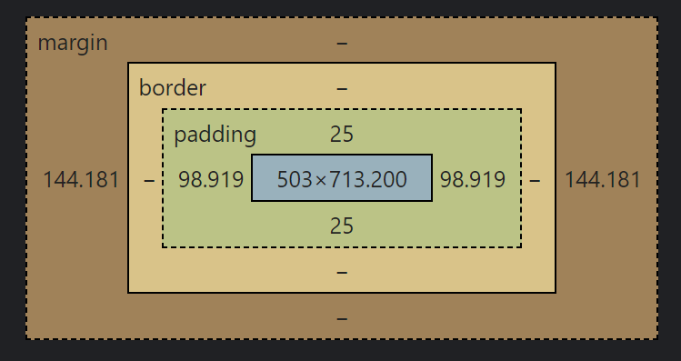

How to View Source
On Chrome, on Windows 11

- Right click on the desired page
- Click on "View Page Source"
Or: use the shortcut Ctrl+U
Developer Tools
Developer Tools can be used for many things both when looking at an already existing webpage or making changes to a webpage you're developing!
- Change background color: you can change the background color to anything you want, or in the case of my website you can also toggle the pattern off and on
- Change the font: there are many web fonts you can switch between using Developer Tools, like arial or sans-serif
- Change padding: if you're not sure how much padding you want on an element you can change it to see how much you should set it to so it looks how you want it